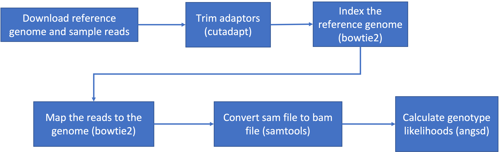

5 Week 4- What is a Genetic Variant?
You’ll find the lecture discussing the definition and identification of genetic variation here ()
5.1 Main Objectives
- Be able to define what a genetic variant is
- Understand the pipeline for identifying genetic variants
- Understand the difference between SAM and BAM file formats and their use
- Learn how to call a genotype and quantify genotype likelihoods
5.2 To get started lets dowload the data and install a few programs
Download the data from the IntroGenomics_Data Week 4 repository on github in your individual directory.
And then unzip week4 so we can work with the data inside
Next we need to install a few programs that will allow us to do what we need to do. This will all take a few minutes and help your neighbors if yours downloads faster!
*The programs that we are installing + samtools: allows us to filter and view our mapped data + bowtie2: to map our reads to the reference genome + cutadapt: will trim adaptor sequences from the reads + fastqc: used to view the quality of the read files
And one more program that we’ll install separately. This is angsd which we will use to find variants in our data. The first command navigates you to your home directory.
cd
git clone --recursive https://github.com/samtools/htslib.git
git clone https://github.com/ANGSD/angsd.git
cd htslib;make;cd ../angsd ;make HTSSRC=../htslib
This is the general pipeline of what we will be doing today: 
Now we’re ready to get going. The first thing we’ll do is have a look at our data and directories to make sure we know where everything is.
Change directories so that you are inside the week4 directory with the data. If you ls into this directory you should see 6 files with a .fastq.gz extension and 1 tiny genome file with a .fna.gz extension.
5.3 Raw read quality control
Next let’s use the program fastqc to check the quality of our data files:
- Readout should say:
- Started analysis for SRR6805880.tiny.fastq.gz
- Analysis complete for SRR6805880.tiny.fastq.gz
Let’s look to see that it worked
$ ls
Ppar_tinygenome.fna.gz SRR6805880.tiny_fastqc.zip SRR6805883.tiny.fastq.gz
SRR6805880.tiny.fastq.gz SRR6805881.tiny.fastq.gz SRR6805884.tiny.fastq.gz
SRR6805880.tiny_fastqc.html SRR6805882.tiny.fastq.gz SRR6805885.tiny.fastq.gz
Looks good! Fastqc generated two outputs for us, a .html and a .zip directory
Let’s run fastqc on the remaining files, and then we’ll take a look at the output. You may have noticed fastqc just used the same file name to produce our output with different extensions. We can take advantage of that by running fastqc on all our datafiles with the wildcard *.
You’ll see you initially get an error message because fastqc doesn’t see the .fastq file extension on some of our files. It simply skips these and moves on the the next file.
To view the output of fastqc, we’ll minimize our terminal and look at our Home folder on our jetstream desktop. This is the same home directory that we’ve been working in through the terminal. Go to the directory where you were running fastqc and find an .html file. Double click it and it should open a web browser with the output data. We’ll go over how to interpret this file in class.
5.4 Trimming to remove adapters
There are many programs to trim sequence files. We’ll use the same paper that was used in the Xuereb et al. 2018 paper [here]. Cutadapt is relatively easy to run with the code below, once we have identified our adaptor sequence and takes the general form below.
Let’s do this on one of our files to test it out.
This works for a single file, but if we want to do it for all our read files we need to either do them all individually (slow and error prone) or use a for loop.
for filename in *.tiny.fastq.gz
do
base=$(basename $filename .tiny.fastq.gz)
echo ${base}
cutadapt -g TGCAG ${base}.tiny.fastq.gz -o ${base}.tiny_trimmed.fastq.gz
doneYay! You should see a little report for each of these files that showing how many reads were trimmed and some other info (how long are the reads, etc)
You can check if the trimmed files are there with:
Our reads are now ready to be mapped to the genome.
5.5 Building an index of our genome
First we have to index our genome. We’ll do that with the bowtie2-build command. This will generate a lot of files that describe different aspects of our genome
We give bowtie2-build two things, the name of our genome, and a general name to label the output files. I always keep the name of the output files the same as the original genome file (without the .fna.gz extension) to avoid confusion (what’s this file for?).
This should produce several output files with extensions including: .bt2 and rev.1.bt2 etc (six files in total)
5.6 Map reads to the genome
Let’s map those reads using a for loop
for filename in *.tiny_trimmed.fastq.gz
do
base=$(basename $filename .tiny_trimmed.fastq.gz)
echo ${base}
bowtie2 -x Ppar_tinygenome -U ${base}.tiny_trimmed.fastq.gz -S ${base}.sam
doneYou should see a bunch of text telling you all about how well our reads mapped to the genome. For this example we’re getting a low percentage (20-30%) because of how the genome and reads were subset for this exercise. The full genome and full read files have a much higher mapping rate (70-80%) than our subset.
You’ll also notice that we have made a bunch of .sam files. THis stands for Sequence Alignment Map file. Let’s use less to look at one of these files using less
There are several columns of data in a sam file
5.7 sam to bam file conversion
The next step is to convert our sam file to a bam (Binary Alignment Map file). This gets our file ready to be read by angsd the program we’re going to use to call SNPs.
5.8 Genotype likelihoods
There are many ways and many programs that call genotypes. The program that we will use calculates genotype likelihoods, which account for uncertainty due to sequencing errors and/or mapping errors and is one of several programs in the package ANGSD. The purpose of this class is not to discuss which program is the “best”, but to teach you to use some commonly used programs.
angsd needs a text file with the .bam file names listed. We can make that by running the command below
Look at the list:
Run the following code to calculate genotype likelihoods
../../angsd/angsd -bam bam.filelist -GL 1 -out genotype_likelihoods -doMaf 2 -SNP_pval 1e-2 -doMajorMinor 1This will generate two files, one with a .arg extension, this has a record of the script we ran to generate the output, and a .maf file that will give you the minor allele frequencies and is the main output file. If you see these two files, Yay!! We did it!
Class Exercise
Look back at the beginning of the lesson and work in small groups through these exercises!
- Run fastqc on our .trimmed reads and compare the html with the untrimmed files. What main difference do you see between them?
- Write a for loop to map the untrimmed files to the genome. How do the alignments compare?
- use cutadapt to trim the sequences to 70 bp like they did in the Xuereb et al. 2018 paper. Write the output of cutadapt to an .70bp.trimmed.fastq.gz and then map these 70bp, trimmed reads to the genome. How do they compare to our .trimmed reads?
- Run the mapping for loop as a shell script using bash (i.e., store the for loop in a text editor (NANOs or other) and execute the .sh script with bash)
- change the parameters of the angsd genotype likelihoods command. How many more/less SNPs do we recover if we lower or raise the SNP p-value?
To see what the other parameters do run `../../angsd/angsd -h
5.9 Group Work Activity- Calling Variants at a Larger Scale
For this exercise we ran everything in the same directory and you can see that we generated quite a few files by the time we were done. Many population genomic studies have data for hundreds of individuals and running everything in the same directory gets confusing and messy. However, having the data in a different directory from the output complicates running things a little (you have to remember which directory you’re in). Make a new directory called raw_data and mv the raw data files (those that end in fastq.gz, and the tinygenome) into it. Then move everything that we generated into a folder called old_outputs.
Now you can write your own slurm script to call genetic variants. Use the code above to help you process everything in one single script. Make a directory for the trimmed_reads and sam_bam files each. Submit a copy of your script for this activity on canvas under the ‘Assignments’ tab for ‘Week 4: Calling Variants’.
5.10 Key Points
- The general pipeline for identifying genetic variants first starts with trimming adaptors from the sample reads, indexing the reference genome, mapping the reads to the genome, converting the sam file to a bam (binary) file and then calculating the genotype likelihoods.
- There are many tools that are useful for calling genetic variants, including samtools, bowtie2, cutadapt and
- SAM and BAM files are similar, but BAM files are in a binary format which makes it easier to process and call SNPs
- ANGSD is a useful program for calculating genotype likelihoods and accounts for uncertainty due to sequencing errors and/or mapping errors
Class Exercise Solutions
Exercise: Solutions
- We should no longer see the red error flag for the per base sequence quality or base pairs conten. code: fastqc *trimmed.fastq.gz
- As a for loop:
for filename in *tiny.fastq.gz; do; base=$(basename $filename .tiny.fastq.gz); echo=${base}; bowtie2 -x Ppar_tinygenome.fna.gz -U ${base}.tiny.fastq.gz -S ${base}.nottrimmed.sam; done
- to find the parameter for maximum read length in cutadapt:
cutadapt - helpThere are a few ways to do this.cutadapt -g TGCAG ${base}.tiny.fastq.gz -u 70 -o ${base}.tiny_70bp_trimmed.fastq.gz
- this can be done by copying and pasting the for loop in a text editor that you save as for example
map_samples_bowtie2.sh. This script is then executed bybash map_samples_bowtie2.sh
- If we remove the
-SNP_pvalcommand entirely we get ~72000 sites retained! Wow! That seems like a lot given our ~20% maping rate. If you instead increase the p-value threshold to 1e-3 we find 3 SNPs.